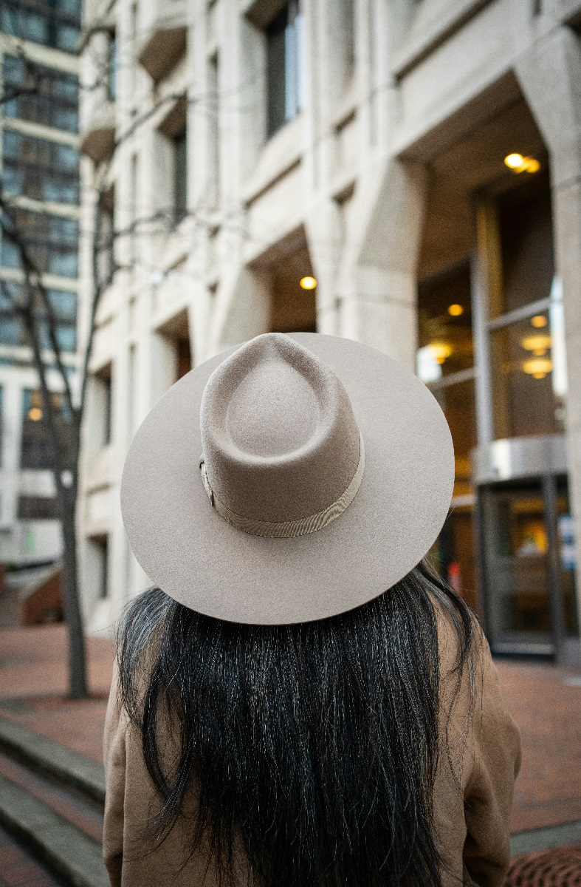

dKin Caps
A young and inspiring organisation whose primary purpose is to bring you the highest quality headwear available.
dKin Caps
A young and inspiring organisation whose primary purpose is to bring you the highest quality headwear available.
This is the simple page that shows a number of bootstrap components and the styles that enhance plain HTML content – while also supporting a responsive display (screen resizing).
Firstly, at the top of the page, within a <header>...</header> section, it is
common to have the navigation and some form of banner / heading content. Here we have a list using the
Bootstrap <nav>...</nav> component in a container with five links to different
parts of the webpage, with a blue (bg-primary) background and white
(text-white) text. While a second container-fluid with a light blue
(bg-primary-subtle) holds the banner details in a centred column of width 8
(col-sm-8 mx-auto text-center py-5) and comprising a title of the page and leading
sentence.
Next is the <body>...</body> section that holds the content of the page. The
content includes the following sections: Introduction (this), Data, Pictures, Stories and a Summary. The
table content is formatted, while the pictures and stories of hats applies differing responsive
layouts.
The final section is a <footer>...</footer>
Note that each section has a Hyperlinks to the Top of the document for navigation.
Earliest Evidence: The earliest known depictions of hats date back to ancient Egypt, where tomb paintings show figures wearing simple head coverings. In Mesopotamia, men often wore conical hats.
Functional Use: Initially, hats were worn for practical reasons such as protection from the sun, cold, and rain. They were also used to signify social status and occupation.
Greece and Rome: In ancient Greece, the petasos, a wide-brimmed hat, was worn by travelers and farmers for sun protection. Roman soldiers wore helmets, while citizens often donned the pileus, a simple cap.
Symbolism: Hats often denoted social status and freedom. For instance, freed slaves in Rome wore the pileus as a symbol of their liberty.
Religious and Social Significance: During the medieval period, hats were used to signify religious affiliation and social rank. The clergy wore distinctive headgear, while royalty and nobility sported elaborate hats to denote their status.
Types of Hats: Common medieval hats included hoods, coifs, and chaperons. Women's headgear, like wimples and veils, became more elaborate.
Fashion Statement: The Renaissance era saw hats becoming an essential fashion accessory. Berets, bonnets, and caps became popular among both men and women.
Elaborate Designs: Hats became more elaborate, featuring feathers, jewels, and intricate embroidery. The brimmed hat, like the wide-brimmed sombrero in Spain, emerged.
Cavalier Hat: The cavalier hat, characterized by a wide brim and adorned with feathers, became fashionable in the 17th century.
Tricorn and Bicorne: By the 18th century, the tricorn hat (with three points) and the bicorne (with two points) became popular, especially among military officers and the upper class.
Top Hat: The top hat became a symbol of the upper class and was a staple of formal wear. It was popularized by figures like Beau Brummell in England.
Bowler Hat: The bowler hat, created in the mid-19th century, became popular among the working class and later among middle-class men.
Variety of Styles: The 20th century saw a proliferation of hat styles, influenced by changes in fashion and culture. Fedoras, cloche hats, and newsboy caps became iconic.
Decline and Resurgence: After the 1950s, the popularity of hats declined due to changes in fashion and lifestyle. However, hats have made a resurgence in recent decades as fashion accessories.
Fashion and Function: Today, hats are worn for both practical and fashion purposes. Baseball caps, beanies, and sun hats are common casual wear, while fedoras, fascinators, and other stylish hats are used in formal settings.
Cultural Significance: Hats continue to hold cultural significance in various societies, such as the cowboy hat in American Western culture and the turban in South Asian and Middle Eastern cultures.
In this section of the page, we have a nice table with some data from a survey conducted in 2013 as
published in the paper A study on Hat User Habits and Their Perception of
the Product Form. The table below is styled with the bootstrap classes table
table-striped-columns table-hover, and the table-primary applied
to the table header thead. Some rows in the table also use the colspan control. Note, the
table also includes a caption and is constrained to 10 columns on wider screens and all 12 columns on
small screens (ie., col-md-10 col-12 mx-auto).
| Item | Male | Female | Total |
|---|---|---|---|
| Do you usually wear a hat? (Often wearing a hat) | |||
| Yes | 11 | 10 | 21 |
| No | 21 | 12 | 33 |
| How often do you clean your hat? (frequency of hat washing) | |||
| Whenever it gets dirty | 11 | 10 | 21 |
| Once a week | 21 | 12 | 33 |
| About once a month | 0 | 0 | 0 |
| Never | 21 | 12 | 33 |
Below are some nice pictire of hats and caps, license-free amages downloaded from the website Top. These images are placed in
a single bootstrap row g-2 (where the g-2 adds a gutter size 2 between the images)
composed of columns using a combines col-sm-4 col-12.
The col-sm-4 forces 3 images to be in a row on all screen sizes except very
small ones (<576px) where the col-12 forces the images to use all 12
columns grid units and stack each image on top of each other. Each image has the class
img-fluid applied to it, allowing it to resize to the size of the column.

The following three images and text are each held within div block that the
class attributes p-4 mb-4 bg-primary-subtle rounded, to set the padding, margin-below,
background colour and corner shape, respectively. Each Image & Text holds a
row, with the text assigned to 7 column units col-sm-7 and the image is
assigned to col-sm-5; allowing the text and images to span 5 and 7 column units
respectively on screens greater than 576px units. Added to each of these two columns is the
col-12, which says when the screen is smaller than 576px, it will then use all 12 columns
grids for each image and text, allowing them to be stacked on top of each other.
Sun Hats by Adrian Siaril
Here, the class img-fluid rounded has been applied to the image.
The title above uses p class="lead" to make the text standout. While this text
uses the p class="small" to distinguish it from the normal paragraphs.
Baseball Caps by Shlok Jethwa
Another picture showing the diverse range of colours and styles that baseball
caps come in. Here the class img-fluid rounded-pill applied to it.
Click to show more of our popular hat designs!
This then concludes the content in the main setion of the page. Note that the end of each
content block is a hyperlink back to the Top
of the page. It uses the <class="text-end"> to align to the right of the screen.
The next and final section is the footer which uses div styled with the class
container-fluid p-2 bg-dark text-white
to align the paragraph text in centre of the container.